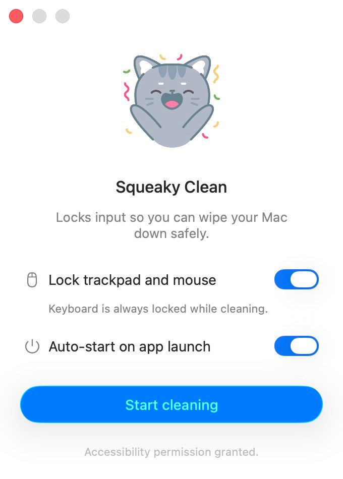
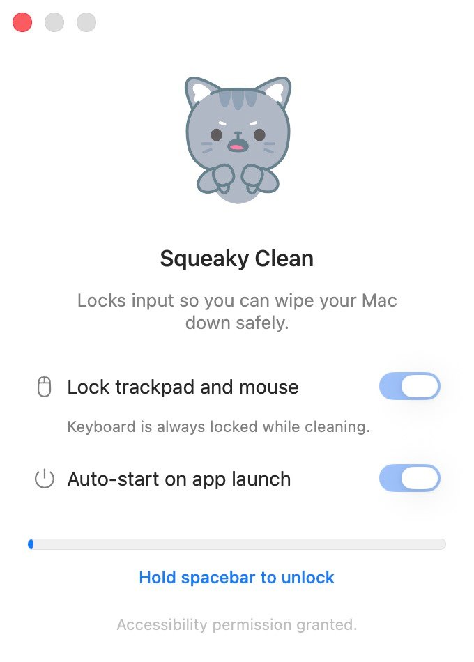

How it works
Three steps, and no way to unlock it by accident.
-
1
Start cleaning
One click locks your keyboard, and your trackpad too if you want it.
-
2
Wipe it down
Press whatever you like. Nothing reaches your Mac while the lock is on.
-
3
Hold space for 3 seconds
A deliberate gesture unlocks it, so a stray swipe of the cloth never can.
Installing it
A one-time setup, and then it stays out of your way.
-
1
Download and unzip
Grab the file from the button above and unzip it.
-
2
Move it to Applications
Drag Squeaky Clean.app into your Applications folder.
-
3
Open it the first time
Right-click the app and choose Open, then confirm. macOS asks because the app isn't distributed through the App Store.
-
4
Grant Accessibility
Click Start cleaning, then allow it in System Settings › Privacy & Security › Accessibility and reopen the app.
About that permission
Squeaky Clean needs Accessibility permission because that's the only way macOS lets an app block keyboard and trackpad input. It uses that access for exactly two things: deciding whether to block an input, and watching for the spacebar so it knows when to unlock.
Nothing is logged, saved, or sent anywhere. There are no servers, no analytics, and no network requests — and the full source code is public if you'd like to check.